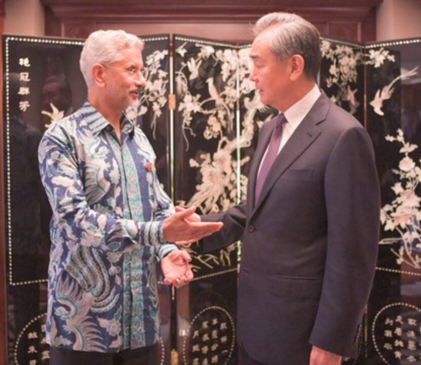

Wang urges India to provide fair business environment for Chinese firms
Image Credits https://www.pakistantoday.com.pk/2023/07/15/wang-urges-india-to-provide-fair-business-environment-for-chinese-firms/
India has been urged by Chinese Foreign Minister Wang Yi to create a fair business environment for Chinese companies operating in the country. This call comes amid rising tensions between the two nations.
In recent years, economic relations between India and China have witnessed significant growth. India has become one of the largest recipients of Chinese foreign direct investment (FDI), with many Chinese firms establishing their presence in various sectors of the Indian economy. However, these investments have not been without their fair share of challenges.
At the annual meeting of the China-India Business Council, Minister Wang expressed concerns over the increasing obstacles faced by Chinese businesses operating in India. He emphasized the need for a level playing field, where fair competition and protection of intellectual property rights are ensured.
"It is essential for India to provide an equitable business environment for Chinese firms, which not only benefits both our countries but also enhances economic ties and promotes regional stability," Wang said.
This appeal comes at a time when the political and military tensions between the two Asian giants have escalated, particularly due to border disputes in the Ladakh region. Anti-China sentiment has been on the rise in India, leading to calls for boycotts of Chinese goods and services. Recent policies enacted by the Indian government have also raised concerns among Chinese investors.
Wang's remarks reflect the growing unease among Chinese companies operating in India. Despite making significant contributions to the local economy and providing employment opportunities to thousands of Indians, they often face regulatory hurdles and protectionist measures.
China's investments have spanned a wide range of sectors in India, including technology, manufacturing, and infrastructure. These investments have not only boosted India's economic growth but also helped in the transfer of technology and knowledge. Therefore, any deterrence to Chinese investments may hinder India's goal of becoming a global manufacturing hub.
Both countries can benefit from open and fair competition. India has a vast consumer market that presents business opportunities for Chinese firms. Similarly, Chinese investments can fuel India's economic development and provide much-needed capital for various sectors.
Despite the existing challenges, there have been efforts to address the concerns raised by Chinese businesses. The Indian government has initiated certain reforms to improve ease of doing business, streamline regulatory processes, and protect intellectual property rights. However, more needs to be done to create a truly fair and conducive environment for all foreign investors, including those from China.
In conclusion, Wang Yi's call for a fair business environment for Chinese firms in India resonates with the aspirations of both countries to enhance economic ties and regional stability. It is crucial for India and China to engage in constructive dialogue and find mutually beneficial solutions to the challenges faced by Chinese businesses operating in India.
Curated by Team Akash.Mittal.Blog
Share on Twitter Share on LinkedIn